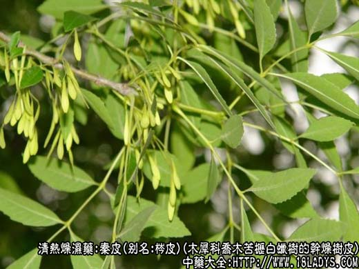
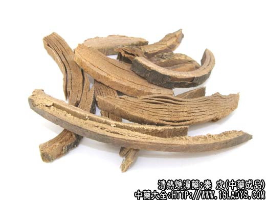
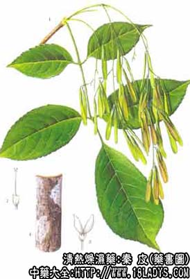

秦皮为常用中药。《神农本草经》列为中品。商品有苦枥和核桃楸树皮两种。
别名：梣皮。
来源：1、为木犀科植物落叶乔木苦枥白蜡树（花曲柳）和小叶白蜡树（水曲柳）的干燥树皮，多为幼树的干皮。
2、核桃楸皮为胡桃科植物落叶乔木桃楸（山核桃）的干燥枝皮。
产地：均主产于华北、东北、西北等地区。
性状鉴别：木犀科秦皮呈卷筒状或半卷长条状，厚约2～3毫米，长短不一。外表面黑褐色或灰褐色，并生有灰白色花斑。内表面稍光滑，黄白色或淡棕色，较老干皮外表皮显粗糙，具不规则的龟裂，质较坚硬而略脆，易折断。断面黄白色，纤维性。气微，味苦。水浸液呈淡黄绿色，并有蓝色荧光为秦皮的特征。
以皮层薄厚均匀，皮细呈长条筒状者为佳。
主要成分：大叶白蜡树皮含七叶树甙。
功效与作用：止痢、收敛、清热。现已证实有利尿、解热和止痛（特别对肌肉风湿痛）作用。并能抑制痢疾杆菌，有效成分为上述两种结晶。
炮制：切丝、生用。
性味：苦寒。
归经：入肝、胆、大肠经。
功能：清燥湿、清肝明目、止痢。
主治：湿热下痢、目赤肿痛、生翳。
临床应用：主要用于治疗菌痢，疗效较好，接近于合霉素。配白头翁、黄柏，或配苦参、木香，方如秦皮苦参汤。
其次，可用于治目赤肿痛、麦粒肿，配淡竹叶、川连。又可试用于风湿肌肉痛作为止痛药。前人经验说秦皮可治风寒湿痹，近代实验也初步观察到秦皮可减轻肌肉风湿疼痛。
用量：3～15g。
附：治菌痢时如无秦皮，在广东可用上银花、鸡蛋花或木棉花代之。
处方举例：秦皮苦参汤：秦皮12g、苦参12g、木香6g，水煎服。
注：核桃科核桃楸皮呈卷筒状或长条形，厚约1毫米，长多在1米以上。外表面灰褐色或灰绿色。密生多数小圆点状皮孔。嫩皮上常有三角形（猴脸状）叶柄痕。内表面黄白色或淡棕色，平滑质坚韧（过去多代麻绳用结扎党参）不易折断。断面黄白色，纤维性。气微，味苦。水浸液呈淡黄绿色，无荧光。
效用：味苦微辛，性平，能清热解毒、治慢性细菌性痢疾。